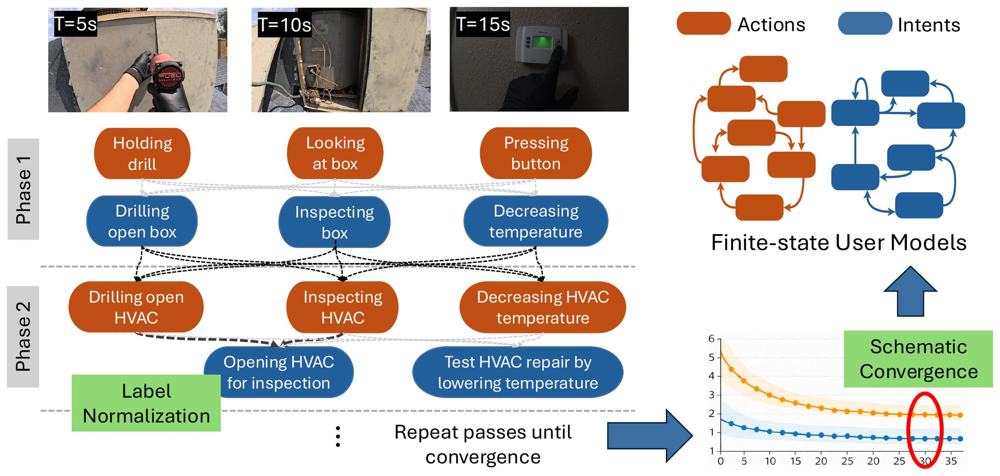
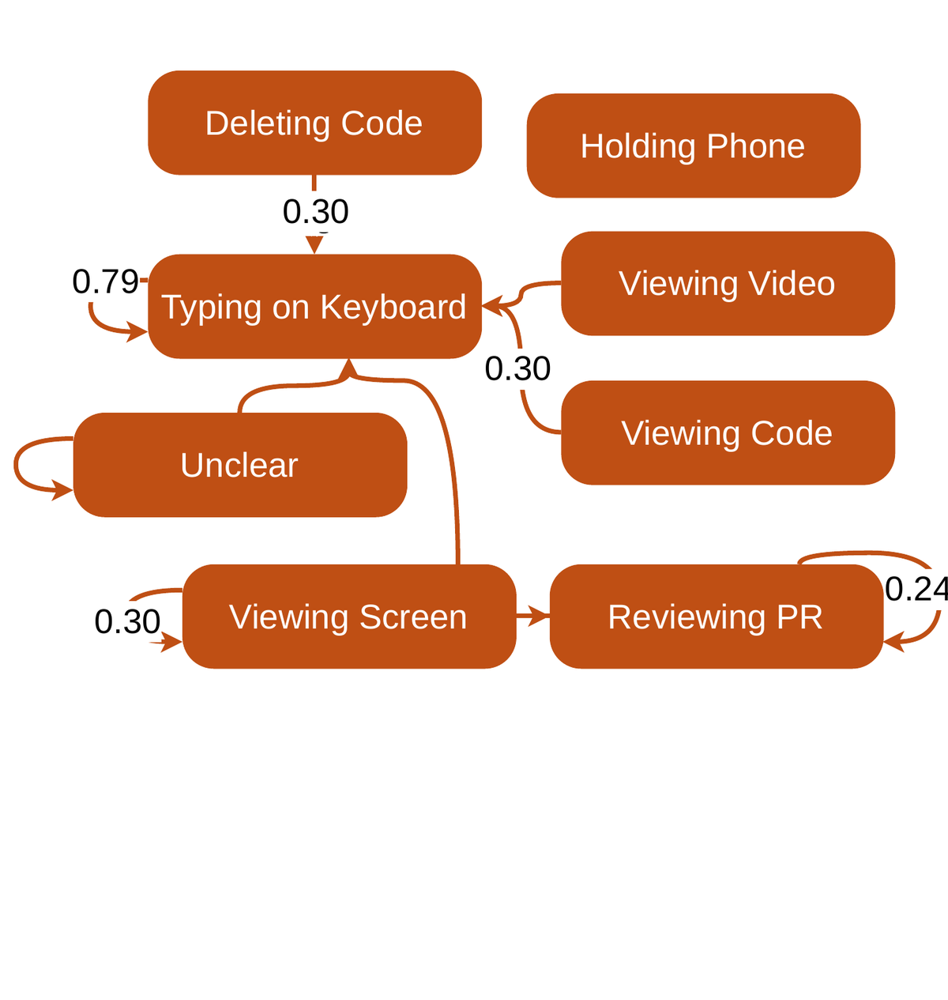
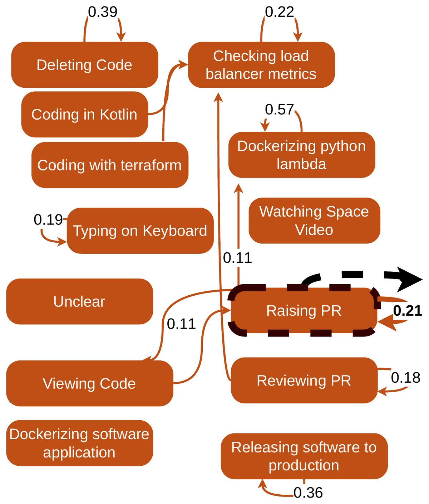
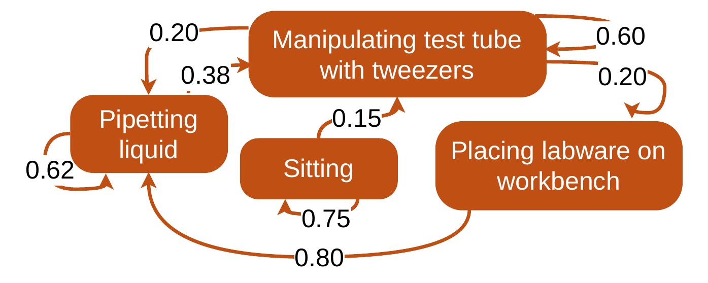
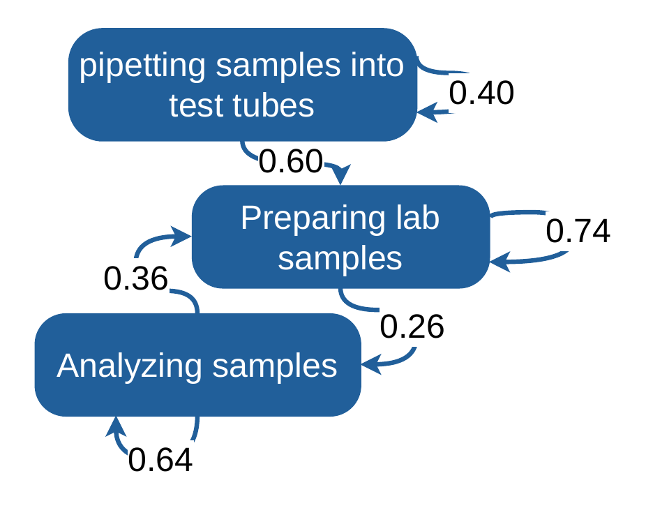
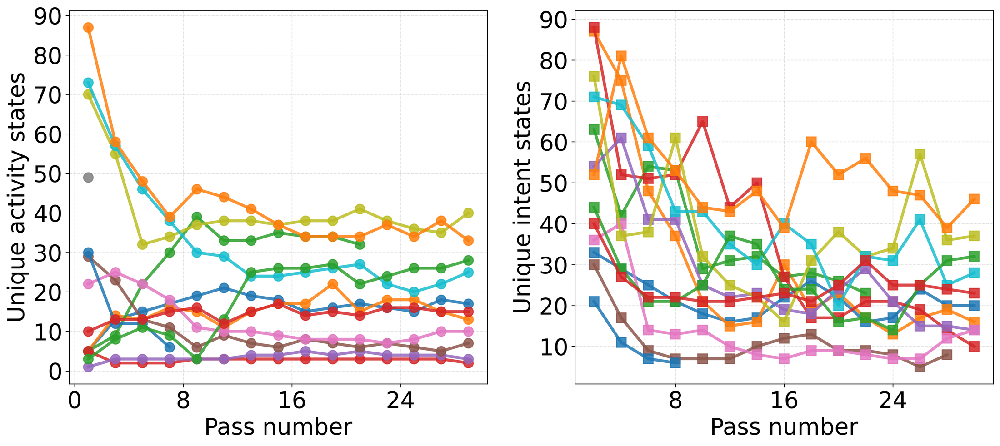

Best viewed on a desktop browser — hover interactions and margin figures need a wide screen.
Accepted to COLM 2026
SERUM
State
Extraction and
Refinement for
User
Modeling
SERUM turns raw egocentric video into interpretable finite-state models of user
actions and
intents —
no logs, no predefined taxonomies, no manual annotation.
Current standard vs. SERUM. Single-pass methods process each frame independently,
producing isolated activity descriptions and coarse intent estimates. SERUM revisits prior context
across frames to build a refined user model of both
actions and
intents — enabling better informed proactive suggestions.
“Can we extract interpretable, structured models of user behavior directly from raw egocentric video —
without a predefined ontology and
without manual annotation?”
Proactive AI assistants need structured models of user behavior — compact representations of how people
move through goal-directed activity over time. Egocentric video is abundant, but converting it into models
that downstream applications can reason over is hard: single-pass VLM annotation hallucinates and suffers from
temporal conflation, collapsing semantically distinct activities into generic labels.
SERUM answers with a multi-pass pipeline that alternates between activity recognition and
intent inference, each pass grounded in the accumulated context of prior passes. After annotation, synonymous
labels are merged into a compact vocabulary, and the label sequences are compiled into first-order Markov
User Models — one over actions, one over intents — that capture the probabilistic transition
structure of user behavior.
61
egocentric videos
4
domains
11,125
frames
15.5h
of footage
12
passes per video
133.5k
state extractions
Coding · cooking · physical activity · daily life — annotated with Qwen3-VL-8B-Instruct served via vLLM.
A generalization study on EPIC-KITCHENS-100 (366 videos, 37 participants) is reported in the paper appendix.
SERUM in action
Watch user models get built
User-model graphs constructed live, in sync with the source video — an office day, a bike commute, and a web-development session.
TL;DR
Four key findings
Hover a card to see the supporting figure in the margin.
01 · Convergence
Schematic equilibrium
Iterative refinement doesn't drift — it converges. The extracted label vocabulary reliably stabilizes
into a consistent taxonomy by pass 8, a phenomenon we term schematic equilibrium.
02 · Prediction
User models that predict behavior
Normalized Markov user models hit 48.5% (actions) and 58.2% (intents)
top-1 next-state accuracy, beating frequency baselines with far lower perplexity —
largest gains on structured tasks like coding (76.4%).
03 · Normalization
Open vocabulary, then merge
Semantic label merging with a human-calibrated threshold compresses the vocabulary by
46%, improving top-1 accuracy by +18.2 pp and cutting perplexity
by 14.9 points.
04 · Human judgment
Labels people recognize
Human annotators rate 88.3% of final-pass labels accurate and prefer them over
first-pass labels 82.8% of the time — iterative refinement produces meaningful,
recognizable improvements.
Method
How SERUM works

The SERUM pipeline on an HVAC repair video. Frames are annotated through alternating
activity (orange) and
intent (blue) passes. Early passes yield generic labels
(“holding drill”); later passes produce fine-grained, context-aware labels (“testing HVAC repair”).
Labels are normalized before constructing the final User Models.
Actions at
Mid-level descriptors of directly observable behavior at frame t —
“washing vegetables,” “pulling a git repository.”
Intents it
Latent goal-directed states inferred from sequences of actions —
“preparing dinner,” “setting up a dev environment.”
The two levels are mutually informative: action evidence anchors intent inference, and intent
context disambiguates ambiguous actions — “looking at a phone” becomes “checking map directions” once intent
context establishes “navigating to a destination.” This bidirectionality is why SERUM alternates
between them rather than running independent passes.
1
Alternating annotation passes
Odd passes label actions, even passes infer
intents — each conditioned on the previous pass's
output, so the two levels ground each other in a feedback loop.
2
Context without token blowup
From pass 2 onward, each pass sees a run-length-encoded temporal window of w=20
neighboring frames plus an inter-pass narrative summary — compressed episodic memory that propagates
global context forward.
3
Label normalization
Surface synonyms (“rinsing produce” vs. “cleaning vegetables”) are merged via Sentence-BERT similarity
at a human-calibrated threshold (t*=0.43, F1 0.82) — cutting vocabulary
by 46% on average.
4
Output: User Models
Label sequences compile into first-order Markov chains — one over actions, one over intents — that
surface probable next states, evaluated by next-state prediction (train on the first 60% of a video,
predict the last 40%).
What refinement buys: pass 1 → pass 11
On a real coding video, pass 1 produces generic states like typing on keyboard
and unclear. By pass 11, task-specific states emerge:
dockerizing python lambda,
raising PR,
checking load balancer metrics.
The refined model correctly predicts state persistence (“raising PR” → “raising PR”), while a majority
baseline blindly predicts the globally most frequent states.

Pass 1 — sparse, generic states.

Pass 11 — task-specific, temporally coherent states.
Example User Models
From a single lab-work video, SERUM produces two complementary views of behavior:

Action-level UM — observable behaviors.

Intent-level UM — inferred goals.
Interactive
SERUM live: run it on any video
Watch SERUM work in real time on a video of your choice. Pick a pre-loaded video or paste a YouTube URL,
and stream pass-by-pass labels as the model produces them. To keep latency reasonable, the post-hoc analysis
stages (normalization, Markov modeling, chart generation) are skipped here — those live in the
dashboard.
1. Choose a video
Some restricted YouTube videos may fail to fetch (anti-scraping protections).
Inference takes a few minutes per video. Pass 1 results appear at ~90 seconds; full
convergence by ~18 minutes for a 10-minute video. Leave the tab open to watch.
2. Live status
Submit a video to see live inference.
Job received
queued
#?in line
3. Video & timeline
FSM graph builds as labels arrive. Highlighted node = current frame's label.
0:00...
Yellow bar = activity pass committed. Green bar = intent pass also committed (frame fully labeled in the current pair).
Both clear when the next pair of passes begins. Click a bar (or use ← →) to jump the video to that frame.
4. State stream
Explore
Dashboard: full pipeline output on 400+ videos
The dashboard exposes the complete pipeline output — per-pass refinement chains, user-model graphs synchronized
to the video, normalized Markov transition matrices, and confidence / perplexity diagnostics — across 400+ videos.
If the first link is offline, try the mirror. Some ISPs may block ngrok; visit the HTTP version once to
accept the certificate before the HTTPS link will load reliably.
State transitions unfolding across a daily-life video in the dashboard.
Evaluation
Results
Next-state prediction
User models are trained on the first 60% of each video and predict the held-out 40%.
Normalized Markov models (Markovn) win on both accuracy and
perplexity, for both actions and intents:
Model
Action Top-1 % ↑
Action PPL ↓
Intent Top-1 % ↑
Intent PPL ↓
Markovn (ours)
48.5 ±30.9
10.9 ±11.0
58.2 ±30.3
8.2 ±9.7
Majorityn
46.5 ±32.6
14.4 ±15.8
53.4 ±33.8
11.0 ±14.7
Markov (raw labels)
37.5 ±33.3
23.9 ±25.6
33.3 ±26.9
24.6 ±21.5
Majority (raw labels)
37.6 ±34.0
29.8 ±32.0
29.9 ±28.1
31.8 ±35.5
Weighted Random
25.9 ±29.5
29.8 ±32.0
17.9 ±20.4
31.8 ±35.5
Uniform
9.2 ±10.5
30.8 ±29.0
6.5 ±9.0
34.2 ±24.3
Mean top-1 accuracy and perplexity at the final pass across 61 videos. n = label normalization applied
before model construction. Top-3 and Top-5 show similar tendencies, favoring Markov even more strongly.
Hover a row for details.
Gains by domain
Structured workflows benefit most: coding reaches 76% top-1 for both actions and intents,
reflecting the rich, repetitive transition structure of software work. Normalization lifts every domain
(raw → normalized):
Domain
Videos
Action Top-1 %
Intent Top-1 %
Coding
19
73.9 → 76.4
47.5 → 76.1
Cooking
15
13.6 → 31.8
21.8 → 53.8
Physical
12
25.7 → 44.2
40.1 → 71.6
Daily Life
15
24.7 → 33.5
21.5 → 30.3
Overall
61
37.5 → 48.5
33.3 → 58.2
Markov top-1 accuracy by domain at the final pass; arrows show the effect of label normalization.
Hover a row for details.
Schematic equilibrium
Does iterative re-annotation drift forever? No. In a 30-pass pilot on 13 videos, raw activity vocabulary
falls from ~28 to ~18 unique states by pass 8 (intents: ~54 → ~24), then stays flat for the next 22 passes.
Every video individually stabilizes by pass 8 — free-form VLM labels settle into a consistent schema instead
of unbounded vocabulary drift. All large-scale runs use 12 passes, a margin beyond the observed convergence point.

Per-video vocabulary across 30 passes (left: activities, right: intents).
All videos stabilize by pass 8 — the schematic equilibrium.
Human assessment
Five annotators with domain expertise in human workflow research judged 180 sampled frames against the
source videos; in a separate ablation study, three annotators judged 30 blinded A/B pairs:
88.3%
of final-pass labels rated accurate by majority vote (α = 0.40)
82.8%
prefer final-pass labels over first-pass labels (α = 0.41)
73%
prefer the full pipeline over an activity-only ablation — 3 annotators, 30 blinded A/B pairs (α = 0.73)
The ablation is telling: without intent passes, activity labels collapse to uninformative dominant states —
typing_on_keyboard for 92–96% of coding
frames — where the intent-informed pipeline distinguishes
editing_css_style,
editing_html_code, and
debugging_code.
Citation
BibTeX
@inproceedings{serum2026,
title = {SERUM: State Extraction and Refinement for User Modeling},
author = {Phu, Andy J. and de Langis, Karin and Mooney, James and Le, Khanh Chi and Kang, Dongyeop},
booktitle = {Conference on Language Modeling (CoLM)},
year = {2026},
note = {to appear}
}